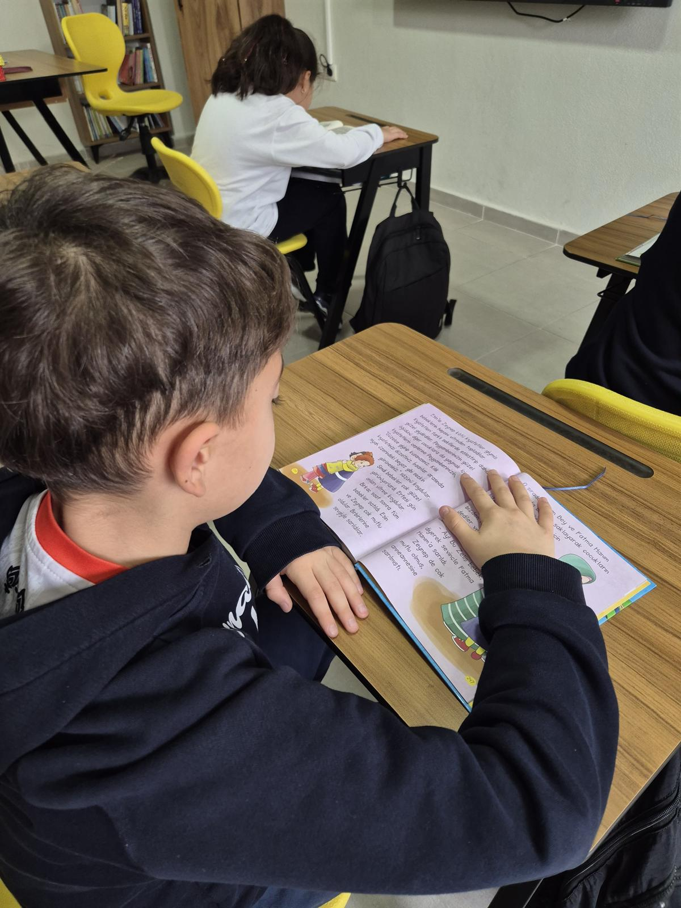
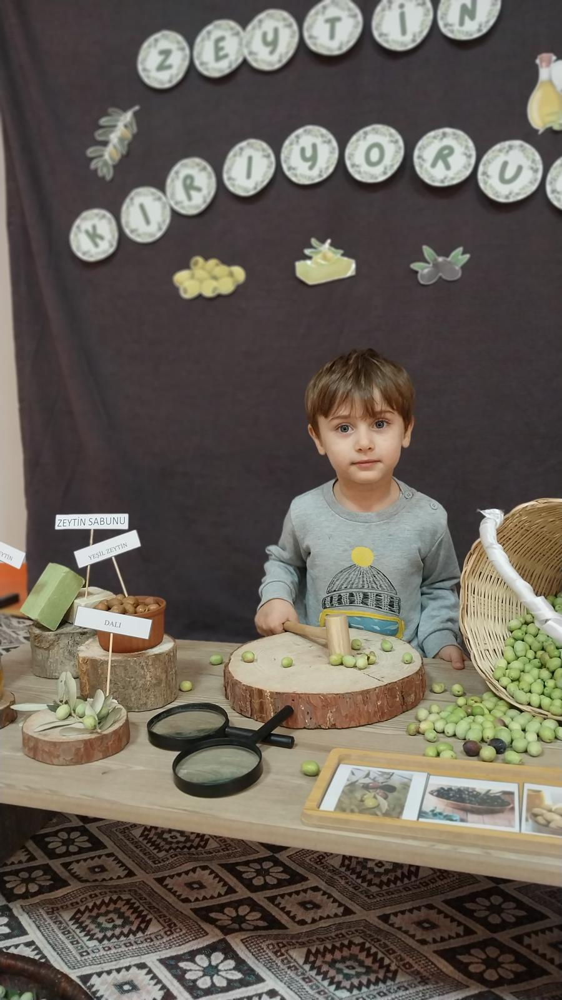

Ölçme ve Değerlendirme Sistemimiz
Bireysel gelişimi merkeze alan modern değerlendirme yöntemleri
Etüt Çalışmaları

Çalışan toplumlarda öğrencinin ailesi ile geçirdiği zaman kısıtlıdır. Aile evde olduğu zaman diliminde çocuğuyla kaliteli zaman geçirmek istemektedir. Bizler de 18 Mart Sirac Koleji olarak bu ihtiyacın farkında olarak, eğitim sistemimizi planlıyoruz. Okulumuz etütlü bir okuldur. Etüt saatlerinde öğrenciler dilerlerse ödevlerini yaparlar ya da gün içinde yarım kalan çalışmalarını tamamlarlar. Ayrıca etüt derslerinde öğrencilerimizle işlediğimiz konuların pekişmesi, öğrenme eksikliklerinin fark edilmesi adına çalışmalar yapıyoruz. Bireysel öğrenmeye daha çok ihtiyacı olan öğrencilerimizi tespit edip, onlar için birebir dersler planlıyoruz. Yine aynı şekilde öğrendiği bilgileri somut materyaller kullanarak, kalıcı hale getiriyoruz:
- Ödevlerini tamamlarlar
- Konu tekrarı yaparlar
- Bireysel öğrenme ihtiyaçlarına göre destek alırlar
Öğrenme eksikliklerini tespit edip birebir dersler planlıyor, somut materyallerle kalıcı öğrenme sağlıyoruz.
Portfolyo Çalışmaları

Montessori eğitim sistemi değerlendirmeyi, kendi geliştirdiği alternatif teknikler kullanarak gerçekleştirir. Okulumuzda öğretmenlerimiz, sene başında öğrencilerin hazırbulunuşluk derecelerini tespit etmek için envanterler oluşturur. Aynı zamanda müfredatın tamamını kapsayan kazanım değerlendirme ölçekleri ile dönem içinde gelişimlerini de takip ederler. Her öğrencinin kendine özel oluşturulan portfolyo dosyasında yaptığı çalışmalar kendi özgür seçimiyle biriktirilir ve bireysel yapılan veli toplantılarında velilere sunulur. Dosya içeriğine öğrencinin Montessori atölyesinde yaptığı çalışmalara da yer verilir. Öğretmen, öğrencinin hem sosyal- duygusal gelişimini hem de akademik gelişimini gözlemler ve kayda geçer. Ölçeklerle bir değerlendirme yapar. Öğrencinin çalışmalarını bir ürün dosyasında biriktirir. Sene sonunda öğrenci durumu hakkında bir değerlendirmede bulunur. Bu değerlendirmeler her dönemde birer kere veli toplantısında ebeveynlere yazılı olarak sunulur. Dönem sonunda verilen karneye ek olarak öğrenci gelişim karnesi de verilir:
- Kişisel portfolyo dosyaları
- Kazanım değerlendirme ölçekleri
- Bireysel veli toplantıları
Öğrencilerin sosyal-duygusal ve akademik gelişimleri gözlemlenerek kaydedilir ve velilere yazılı olarak sunulur.
Ödevlendirme

Eğitim yönüyle gelişmiş olan toplumlarda ödevin ağırlığı ve niteliği diğer toplumlara göre farklılıklar gösterir. Yapılan araştırmalar ödevin, çocuğun yaşamında özellikle zaman yönetimi ve sorumluluk duygusunu kazanmada etkin bir yere sahiptir. Klasik eğitim anlayışından farklı olarak önerilen ödev öğrenciyi aktif kılan, düşünmeye- araştırmaya sevk eden, aile bireyleriyle işbirliği yapmayı gerektiren nitelikte ödevlerin verilmesidir. Bizler Özel On Sekiz Mart Siraç İlkokulu olarak modern eğitim sistemlerini takip etmekte ve ödev sistemimizi bu doğrultuda planlamaktayız. Okulumuzda Montessori eğitim felsefesinin öngördüğü şekilde ödevler haftalık olarak öğrencilerin bireysel öğrenme hızları dikkate alınarak verilir. Öğrenci ödevini teslim edeceği güne kadar günlere böler ve planlamasını kendisi gerçekleştirir. Öğretmenlerimiz tarafından sınıf düzeyine göre yapılan ödevlendirmeler K12 veli takip sistemimize eklenir ve ödevlerin yapılma durumları sisteme işlenir. Ödevler her öğrenci için bireysel olarak öğrenme hızına göre ve seviyesine uygun olarak verilmektedir. Haftalık ödevler sayesinde öğrencilere sorumluluk bilinci kazandırılmaktadır. Ödevler bir sonraki hafta teslim alındığında öğretmen tarafından kontroller yapılır. Ardından öğrencilerle birebir doğru ve yanlışlarına bakılarak geri dönüt yapılması sağlanır:
- Haftalık bireysel ödev planlaması
- Araştırmaya teşvik eden projeler
- K12 veli takip sistemi entegrasyonu
Öğretmenler ödevleri değerlendirip geri dönüt verir ve öğrencilere zaman yönetimi becerisi kazandırılır..
Dijital Eğitim ve K12

- Animasyon ve simülasyonlu konu anlatımı - soru çözümü
- Öğrenciye özel ödevlendirme
- Öğrenciye özel gelişim raporları
- Öğrenciye özel K12 sisteminde fotoğraf paylaşımi
D-4 Sınıf Kazanım Tarama Çalısmaları
Her hafta önceki haftaların kazanımları kazanım tarama testleri ile gözden geçirilir. Konu pekiştirme ve soru çözme çalışmaları yapılır.